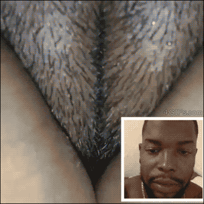

平面设计
艺术
计算机编程
游戏
我的个人学习记录

Part 1:我的HTML5的学习过程将会记录在这个网页里面
这一部分是网页链接与添加图片的练习下面是展示:
动态图片
哔哩哔哩视频网站
Part 2:
HTML5中添加超链接的标记语言为：<a href="url">
如果要使超链接在新窗口打开，在<a href="url">引号后添加target="_blank"，即是<a href="url" target="_blank">。
Part 3:
这是图片显示:
《春晓》
孟浩然（唐）
春眠不觉晓
<2>
，
处处闻啼鸟，
夜来风雨声，
花落知多少。
ID属性的使用方法展示：
点击我返回Part 1
点击我返回Part 2
点击我返回Part 3
图片链接测试:
点击下面图片跳转到b站:
这是target属性四个值得不同表现示例：
_parent的表现
_blank的表现：新窗口中显示超链接页面
_self的表现:在本页面显示超链接页面
_top的表现
我的新网页
表情包
退出全屏
音乐播放器测试
点击跳转B站
图像在文本中
图像在文本中
图像在文本中
点击下载【血缘·老猎人DLC】OST/失败者.MP3
transform:scale(0.5,0.5);


 transform:scale(0.5,0.5);
transform:scale(0.5,0.5);